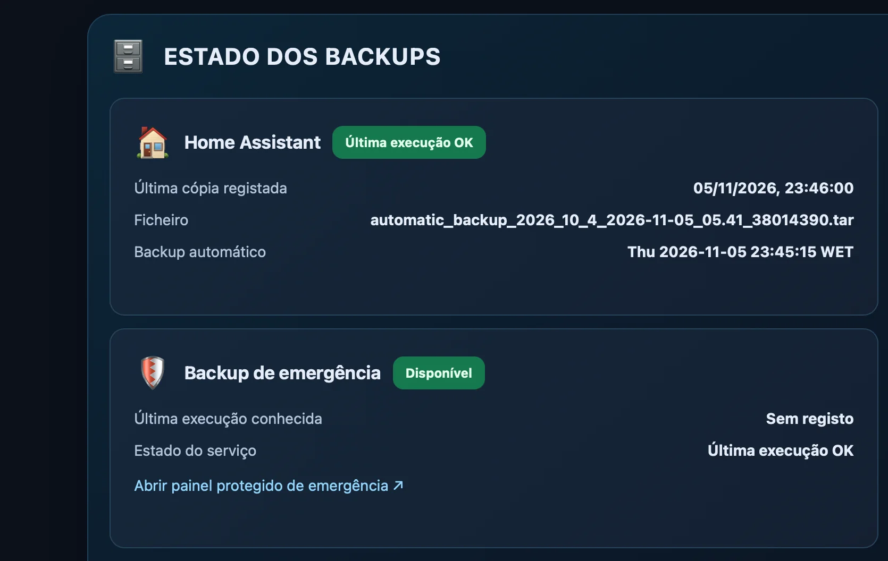
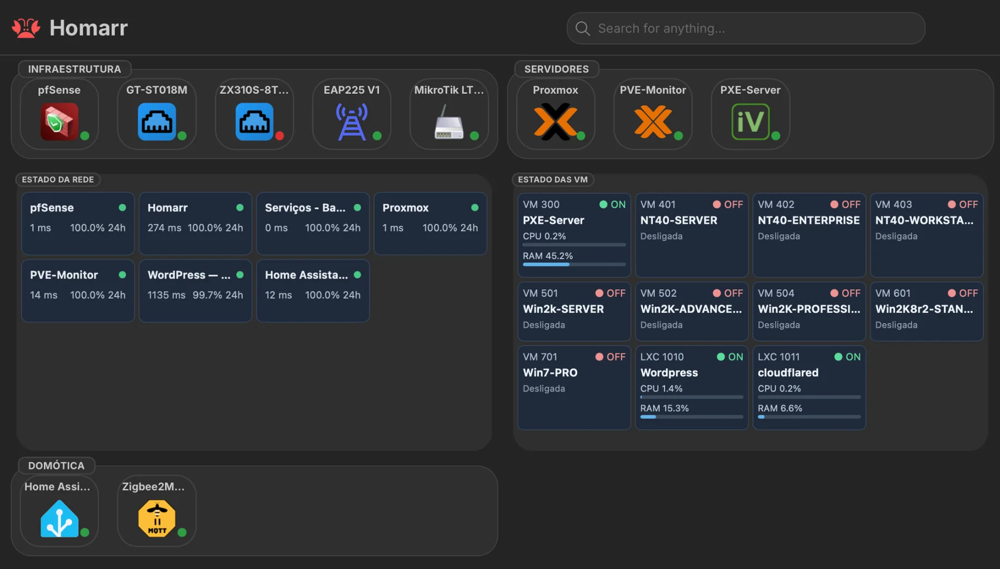
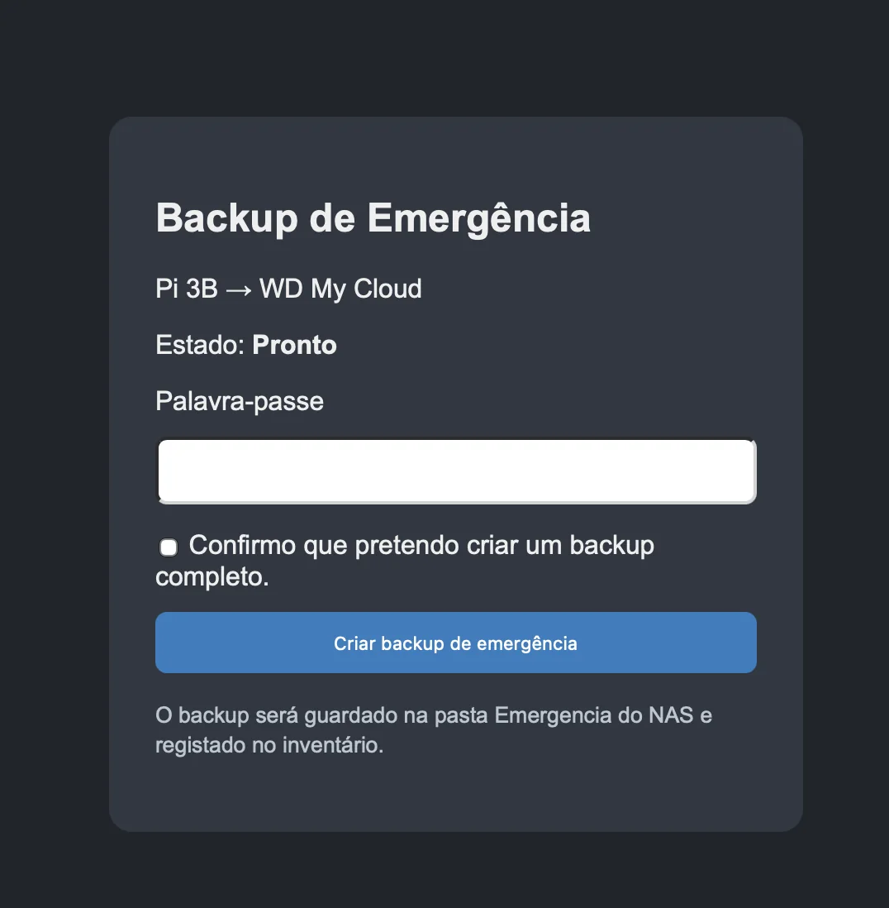
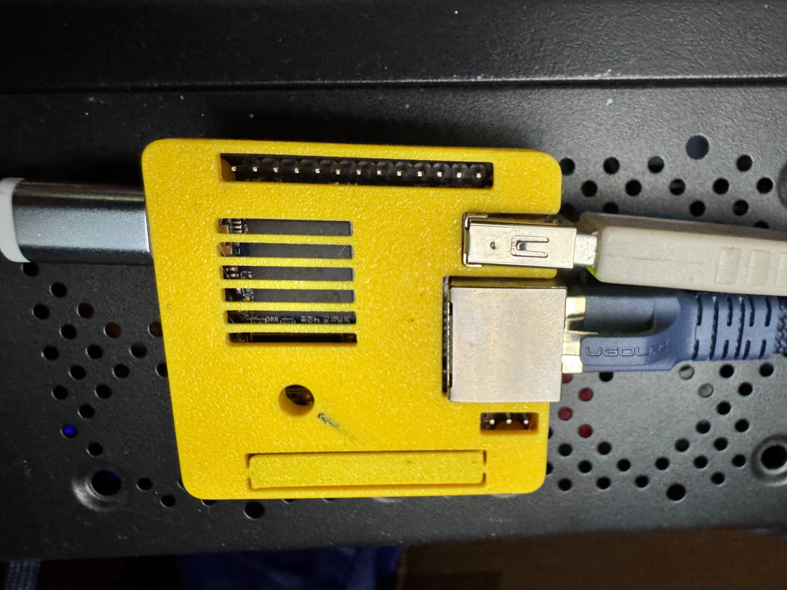
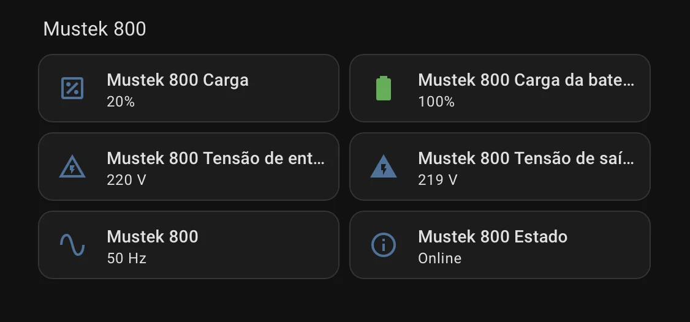
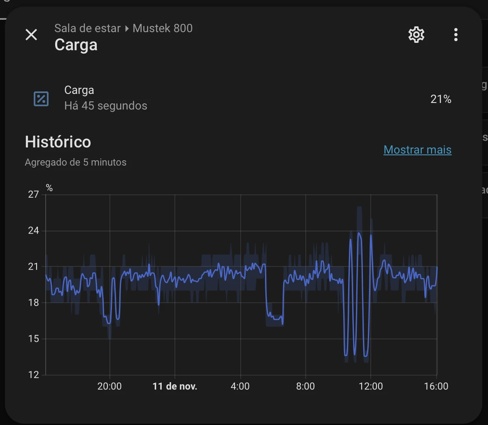
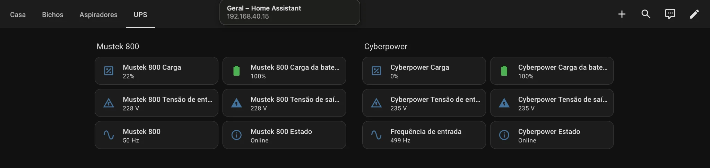

Porque monitorizar?
A monitorização permite identificar serviços indisponíveis, antecipar falhas e compreender tendências operacionais. O objetivo é melhorar a fiabilidade e reduzir o tempo de diagnóstico.


Um dos equipamentos que participa neste trabalho é o Banana Pi M5, com Uptime Kuma, SmokePing e serviços auxiliares de monitorização.
Backups e continuidade
Além da disponibilidade dos serviços, a continuidade depende de processos de backup simples e controlados. Um painel dedicado ajuda a confirmar rapidamente o estado das cópias e a existência de mecanismos de emergência.

Orange Pi Zero: um pequeno computador para uma tarefa específica
Nem todos os serviços precisam de um servidor de grandes dimensões. Um dos exemplos do laboratório é a utilização de um Orange Pi Zero num projeto de monitorização da UPS. A ideia é simples: dedicar um computador pequeno e de baixo consumo à recolha de informação sobre a alimentação elétrica, permitindo acompanhar o estado do equipamento sem depender de uma máquina de trabalho.
A monitorização da UPS integra a rede de servidores (VLAN 40), separada dos dispositivos IoT da VLAN 30. Essa distinção ajuda a organizar a infraestrutura: os sensores e gateways ficam numa área, enquanto os serviços que recolhem e apresentam informação permanecem noutra.
A fotografia mostra a própria placa usada nos testes. Para lá do tamanho, interessa sobretudo a aprendizagem: comunicação com periféricos, diagnóstico de falhas, execução de serviços em Linux e a importância de verificar se as medições continuam disponíveis após uma interrupção.

Mustek 800: leituras reais no Home Assistant
A UPS Mustek 800 é acompanhada através do sistema de monitorização integrado no Home Assistant. As capturas abaixo registam as leituras apresentadas em 11 de novembro de 2026; não representam valores constantes nem ensaios de autonomia.


Estas leituras documentam a monitorização já operacional da Mustek 800. A ERREPI WOW 700, anteriormente testada, teve dificuldades de comunicação USB e é um caso separado da CyberPower UT850EG.
CyberPower UT850EG: segunda UPS monitorizada pelo NUT
Em novembro de 2026 foi adicionada a CyberPower UT850EG (850 VA / 425 W) à monitorização existente no Orange Pi Zero, mantendo a Mustek 800. A CyberPower foi reconhecida por USB HID com o identificador 0764:0501 e passou a comunicar através do driver usbhid-ups do Network UPS Tools (NUT) 2.8.0.

Na captura, a Mustek apresenta 22% de carga, bateria a 100%, aproximadamente 228 V e 50 Hz. A CyberPower apresenta 0% de carga, bateria a 100%, aproximadamente 235 V, estado Online e a frequência apresentada de 499 Hz. São leituras pontuais, não medições de autonomia.
input.frequency: 499.0 para a CyberPower, quando a frequência de rede esperada é próxima de 50 Hz. Os 499 Hz indicam provavelmente um erro de escala na interpretação do valor HID (cerca de 49,9 Hz), não uma frequência real confirmada. O Home Assistant mostra o valor recebido do NUT; o problema não foi corrigido nesta instalação. Uma futura atualização do driver poderá ser testada, sem comprometer o funcionamento atual.Foi confirmada a comunicação USB, a leitura do estado OL, da bateria e das tensões. A autonomia com equipamentos ligados e os procedimentos de desligamento automático ainda não foram testados. A UPS permaneceu ligada à corrente para carregar a bateria.
Continuidade de ligação: fibra → LTE
A monitorização não serve apenas para detetar que um serviço caiu. Também ajuda a confirmar que a infraestrutura reagiu como previsto. Um exemplo prático é o failover da ligação principal de fibra para a ligação LTE secundária na firewall.


Quando a fibra falha, a monitorização permite perceber rapidamente que a conectividade externa passou a depender da WAN2/LTE. Isto é importante porque muitos serviços continuam ativos e acessíveis, mas a capacidade disponível deixa de ser a mesma.
Ver a explicação completa do failover no artigo de pfSense →
RTT, perda de pacotes e estado
Tempo de ida e volta de uma verificação de rede. Mede a latência até ao destino monitorizado.
Indica a variação estatística dos tempos de resposta; valores elevados podem apontar instabilidade.
Percentagem de sondas de monitorização perdidas.
Estados apresentados pelo sistema de monitorização. “Pending” é transitório; não é necessariamente prova de uma falha completa.
Um gateway LTE marcado como Online confirma que responde à monitorização. Para comprovar o caminho usado por todo o tráfego, é necessário considerar a configuração de encaminhamento e testar a saída efetiva.
Exemplos
Indicadores úteis
- Disponibilidade dos serviços principais.
- Consumo de recursos em hosts e containers.
- Capacidade e estado dos suportes de armazenamento.
- Estado e autonomia de UPS, quando disponíveis.
- Resultados de backups e verificações periódicas.
Exemplo: indisponibilidade de um serviço
Quando uma verificação falha, convém confirmar primeiro a conectividade, depois o estado do serviço, os recursos do sistema e os registos. Em seguida, regista-se a causa e a intervenção efetuada.